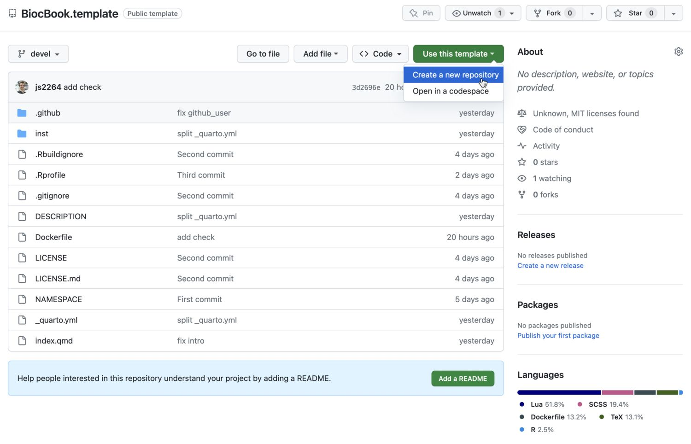
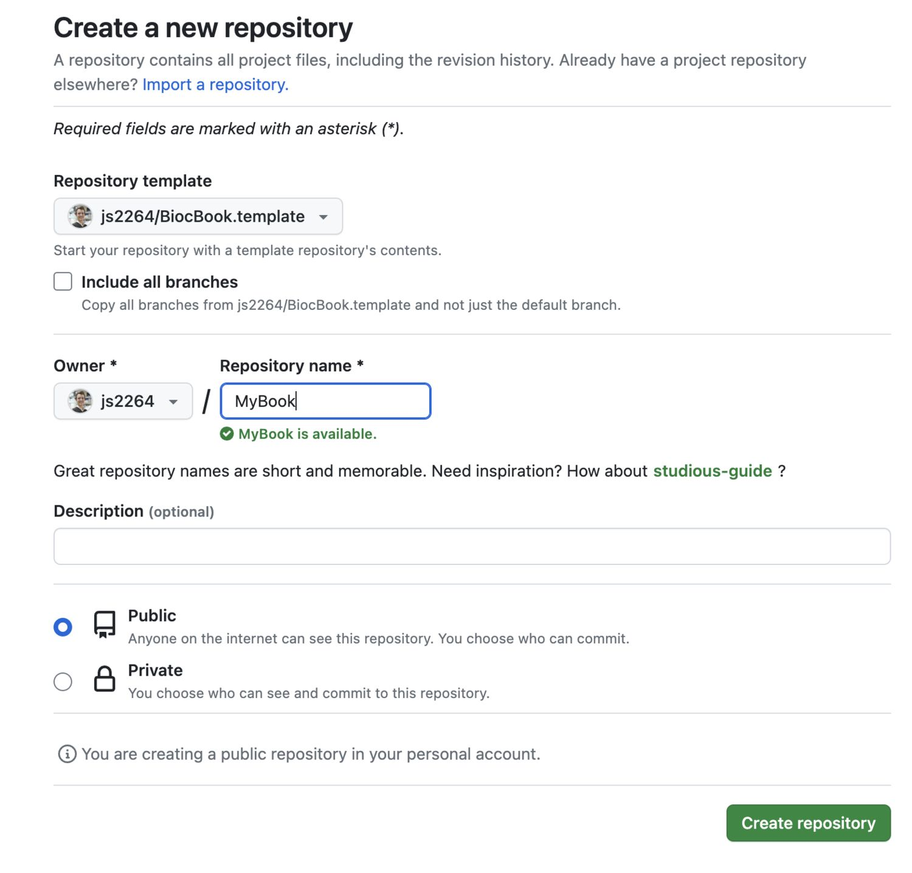
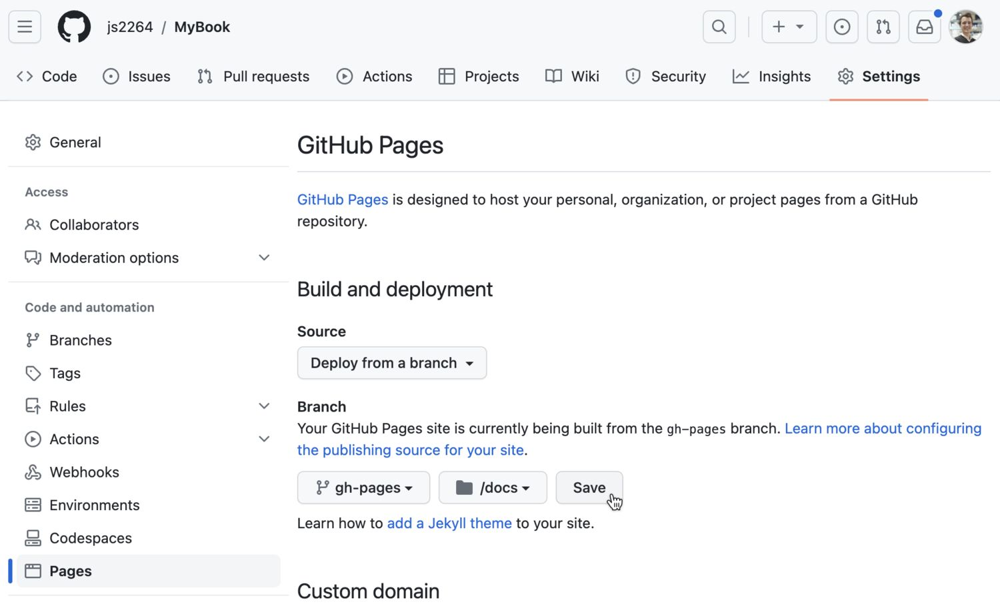
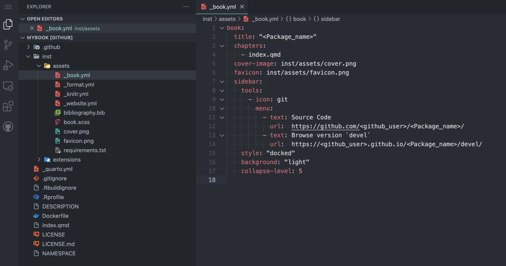
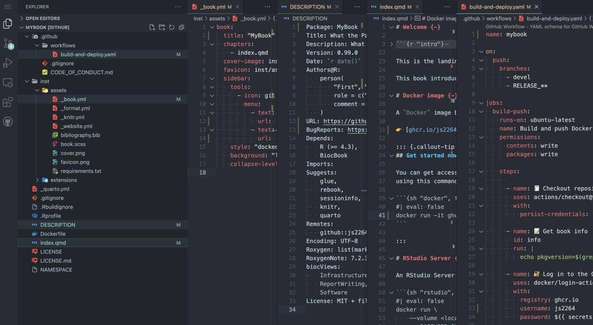
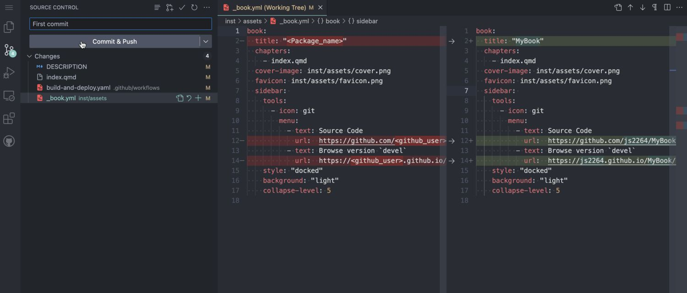

gh::gh_whoami()
2 Writing a {BiocBook} package
2.1 Register a Github account in R
Tip
Skip this section if your Github account is already registered. You can check this by typing:
2.1.1 Creating a new Github token
usethis::create_github_token(
description = "BiocBook",
scopes = c("repo", "user:email", "workflow")
)This command will open up a new web browser. On the displayed Github page:
- Select an Expiration date;
- Make sure that at least
repo,user > user:emailandworkflowscopes are selected; - Click on “Generate token” at the bottom of the page;
- Copy your Github token displayed in the Github web page
2.1.2 Register your new token in R
gitcreds::gitcreds_set()Paste your new Github token here and press “Enter”.
Saving your Github token for later use
On Linux, gitcreds is generally not able to permanently store the provided Github token. For this reason, you may want to also add your Github token to ~/.Renviron to be able to reuse it. You can edit the ~/.Renviron by typing usethis::edit_r_environ(), and define the GITHUB_PAT environment variable:
.Renviron
GITHUB_PAT="<YOUR-TOKEN>"2.1.3 Double check you are logged in
gh::gh_whoami()
2.2 BiocBook workflow
2.2.1 Initiate a {BiocBook} package
2.2.1.1 R
Creating a BiocBook in R is straightforward with the {BiocBook} package.
if (!require("BiocManager", quietly = TRUE)) install.packages("BiocManager")
if (!require("BiocBook", quietly = TRUE)) BiocManager::install("BiocBook")
library(BiocBook)
biocbook <- init("myBook")The steps performed under the hood by init() are detailed in the console. Briefly, the following steps are followed:
- Creating a local git repository using the
BiocBookpackage template - Fillout placeholders from the template
- Push local commits to your Github account, creating a new GitHub repository
2.2.1.2 VS Code
This approach is significantly more hazardous. It is highly recommended to stick to the
init() helper function from the {BiocBook} package.
Use the {BiocBook.template} package template
This template can be cloned from js2264/BiocBook.template

Create a new repo

2.2.1.2.1 Enable Github Pages to be deployed
You will need to enable the Github Pages service for your newly created repository.
- Go to your new
Githubrepository; - Open the “Settings” tab;
- On the leftside bar, clik on the “Pages” tab;
- Select the
gh-pagesbranch and the/docsfolder to deploy your Github Pages.

Enter VS Code editor by pressing .

Fillout placeholders
Warning
Three types of placeholders need to be replaced:
<Package_name><package_name><github_user>
Three different files contain these placeholders:
/inst/assets/_book.yml/DESCRIPTION/index.qmd

Commit changes

Clone the package to a local computer
2.2.2 Edit new BiocBook chapters
-
add_chapter(biocbook, title)is used to write new chapters; -
add_preamble(biocbook)is used to add an unnumbered extra page after the Welcome page but before the chapters begin.
Don’t forget to add any package used in the book pages to
Imports: or Suggests: fields in DESCRIPTION.
This ensures that these packages are installed in the Docker image prior to rendering.
2.2.3 Edit assets
A BiocBook relies on several assets, located in /inst/assets.:
-
_book.yml,_format.yml,_knitr.yml,_website.yml bibliography.bibbook.scss
To quickly edit these assets, use the corresponding edit_* functions:
edit_yml(biocbook)
edit_bib(biocbook)
edit_css(biocbook)2.2.4 Previewing and publishing changes
2.2.4.1 Previewing
While writing, you can monitor the rendering of your book live as follows:
preview(biocbook)This will serve a local live rendering of your book.
2.2.4.2 Publishing
Once you are done writing pages of your new book, you should always commit your changes and push them to Github. This can be done as follows:
publish(biocbook, message = "🚀 Publish")2.2.4.3 Check your published book and Dockerfiles
This connects to the Github repository associated with a local book and checks the existing branches and Dockerfiles.
status(biocbook)2.3 Writing features
2.3.1 Executing code
It’s super easy to execute actual code from any BiocBook page when rendering the BiocBook website.
2.3.1.1 R code
R code can be executed and rendered:
R
utils::packageVersion("BiocVersion")
## [1] '3.19.1'
2.3.1.2 bash code
bash code can also be executed and rendered:
bash
find ../ -name "*.qmd"
## ../pages/biocbook-vs-rebook.qmd
## ../pages/Chapter-2.qmd
## ../pages/Chapter-1.qmd
## ../pages/preamble.qmd
## ../pages/Chapter-3.qmd
## ../index.qmd2.3.2 Creating data object
While writing chapters, you can save objects as .rds files to reuse them in subsequent chapters (e.g. here).
isthisworking <- "yes"
saveRDS(isthisworking, 'isthisworking.rds')2.3.3 Adding references
References can be listed as .bib entries in the bibliography file located in inst/assets/bibliography.bib. The references can be added in-line using the @ notation, e.g. by typing @serizay2023, this will insert the following reference: Serizay (2023).
Serizay, Jacques. 2023. BiocBook: Write, Publish and Maintain Versioned Quarto Books with Bioconductor. https://github.com/js2264/BiocBook.